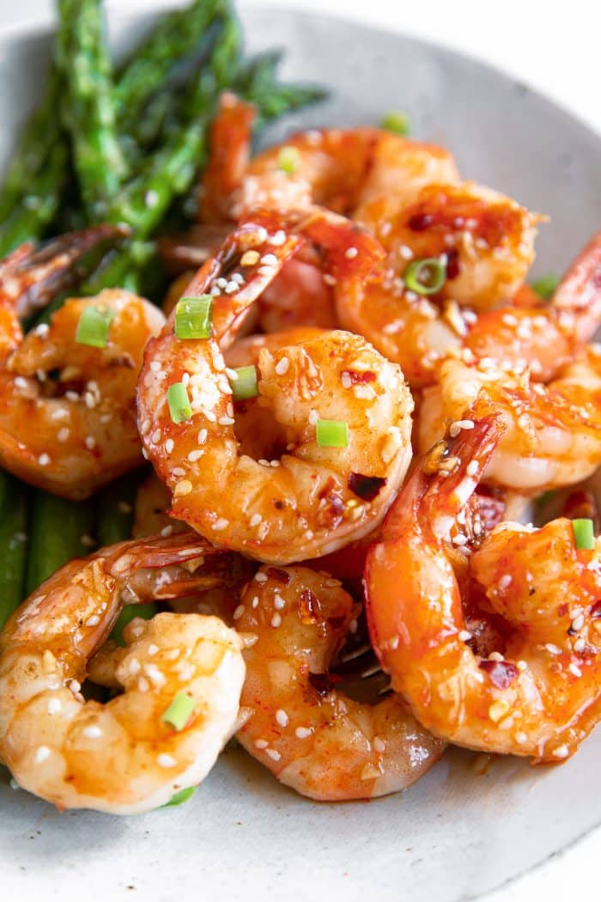

Siracha Shrimp Stirfry Recipe

Description
Siracha Shrimp is a simple and quick dish that can be cooked and served within 20 minutes.
Not much else to say
Ingredients
- Shrimp 1kg
- Butter 10g
- 1 Lime
- Sake 5ml
- Soy sauce 5 ml
- Rice wine vineger 5 ml
- Siracha 20 ml
- Honey 25 ml
- Sesame seeds
- Minched garlic
Directions
- Peel and devein the shrimp. Leave the tails on, or remove the tails if preferred.
Pat shrimp dry with paper towels.
- Add the olive oil to a large skillet set over medium-high heat.
Add the shrimp in a single layer nd cook for approximately 3 minutes, then flip
and continue to cook the other side for an additional 3-4 minutes..
- While the shrimp is cooking, mix together the lime juice, saké, soy sauce, rice wine vinegar, Sriracha, honey, and minced garlic.
- Remove the cooked shrimp to a clean plate and set aside
- Return the skillet to medium-high heat. Deglaze and charred or stuck-on bits with a splash of saké (or soy sauce/rice wine vinegar).
Add the sauce to the skillet and bring to simmer.
- Allow the sauce to simmer for 3-4 minutes, or until slightly thickened.
- Return the shrimp to the skillet, mix well to coat in sauce, and cook for 1-minute.
- Remove from heat and garnish with sesame seeds, crushed red pepper, and green onions, if desired.
Serve with a side of white rice, brown rice, grilled or roasted veggies, and lime wedges.